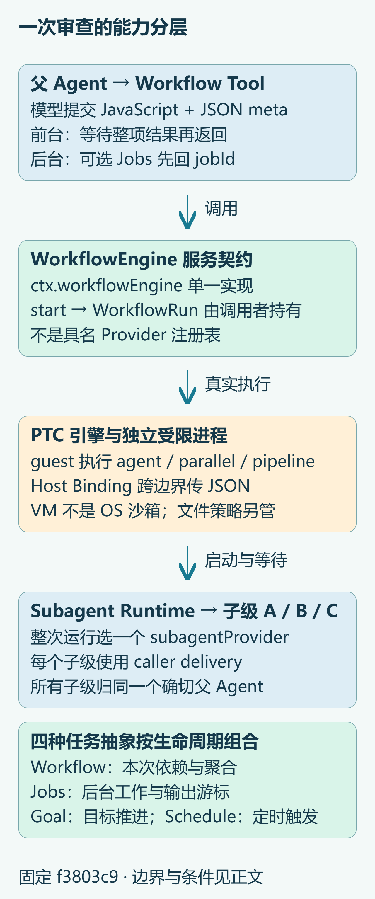
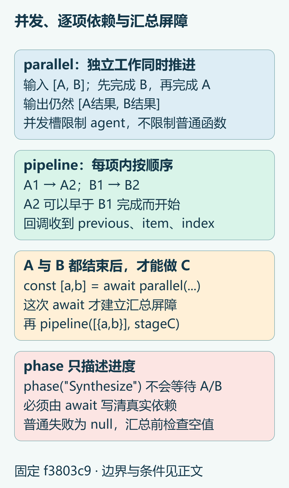
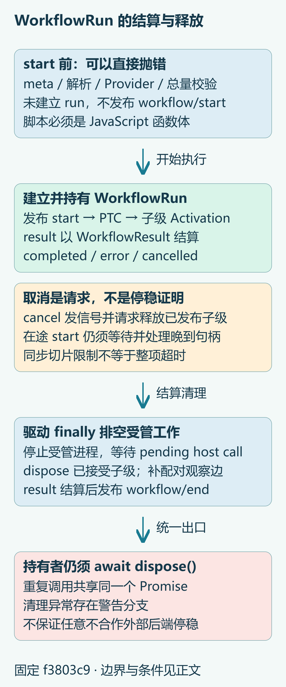
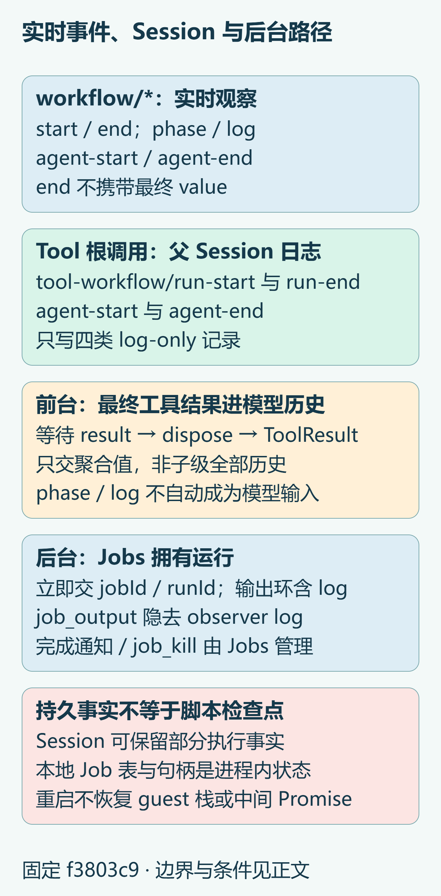

H22 作者审阅页 · 未发布。实际 LessonMarkdown 的静态渲染，折叠答案可展开；课程版本的复制交互已另经 React 挂载测试。图片在本页映射为相邻文件，不改变教材的 /course-media 路径。
Workflow、Jobs、Goal 与任务调度
210～290 分钟（分三段；作者估计，环境准备与真实试读另计）
两份调查完成之后，谁开始综合？
项目研究助手接到明确请求：“请用一个工作流，分别分析示例项目的架构和测试覆盖，再让第三个子 Agent 整理风险，形成综合报告。”假设示例只有三条虚构事实：三个模块、其中两个有测试、剩余模块需要补测。架构调查 A 和测试调查 B 可以同时进行；综合 C 必须取得两份结果。
H21 已经会把调查交给子 Agent。现在的缺口是执行关系：谁决定 C 何时开始？B 先完成，结果会不会放错位置？A 失败后 C 还能否给出可信结论？父级结束本轮对话后，这项工作由谁持有？把这些问题都塞进一串自然语言提醒，难以检查真实依赖。
Workflow（工作流）把一组工作的依赖、并发和聚合写成可执行程序。这里可以把它理解为一张有返回值的工作单：A/B 汇齐，再交 C。技术上，本课固定实现是 WorkflowEngine.start() 建立一次 WorkflowRun，由 PTC 引擎执行 JavaScript 编排脚本，再经 Subagent Runtime 调用子级。工作单的类比不代表有自动检查点、任意图调度或跨重启续行。S01 · WorkflowEngine / emitWorkflowEvent S02 · WorkflowStartRequest / WorkflowRun
小任务仍可直接委派。 只查一个目录、让一位子级核对三条事实，普通 Subagent 更容易管理。多阶段依赖、重复条目、规模约束和统一输出开始占据父级注意力时，显式编排才可能值得。额外脚本、进程启动、子级请求和综合都增加成本；这是我们的工程判断，本课没有真实模型成本或加速数据。
先用六分钟分清四个生命周期
Stage 4 的短期 Workflow 是把已有工具按状态和停止条件衔接；这里的 Harness JavaScript/PTC 是另一套实现，不能因同名直接套 API。已有权限者可选回看 Stage 4 工具编排 与 能力组合，无须购买或打开旧课才能完成下面的自足复习。
复接 H09/H17/H20/H21：Agent 是当前运行实体，Session 保存已接纳事实；一轮父 Agent Turn 可以包含多个模型 Step。SubagentActivation 管理一次委派及其交付，持有者要负责释放。cancel() 发出停止请求，await 清理结果才回答受管资源是否停稳。历史记录能重读，旧 Promise、进程和控制器不能随历史一起复活。
| 问题 | 选择的抽象 | 谁拥有活动期 | 留下什么，不能据此推出什么 |
|---|---|---|---|
| A/B 并行后由 C 汇总 | Workflow | Run 的调用者 | 可有运行事实；没有 guest 栈检查点 |
| 先回对话，稍后收报告或停止任务 | Jobs | Job Registry 与 producer 分工 | 本地表、输出环与游标在进程内 |
| 持续推进“完成项目审查”直到完成或暂停 | Goal | Session 目标状态与轮次驱动分工 | 持久目标不自动授权新进程继续 |
| 明天或每周提醒原会话检查报告 | Schedule | Host 调度服务 | 持久触发记录，不保存 Workflow 执行位置 |
Jobs（后台作业）解决“调用先返回后，谁还在管理这份工作”。Job 是一个有 owner、状态、输出与取消入口的登记项；producer 提供真正的 cancel/done。它不是多 Agent 依赖图。Goal（目标）解决跨轮推进：目标、修订号、轮次预算、暂停/阻塞/完成属于目标状态；是否允许当前进程自动继续，是另一项 activation。Schedule（调度）解决时间触发：保存何时向哪个 Session 投递什么，不等于某个 Agent 一直活着。S37 · JobRegistry S38 · LocalJobRegistry S41 · GoalRef / GoalView S43 · Schedule create/list/catalog
可以这样组合：未来的 Schedule 向原 Session 投递一条新输入；Agent 决定是否执行一轮目标工作；这轮选择 Workflow 编排调查；若确需后台体验，Workflow Tool 把运行交给 Jobs。这是一种有条件的组合设计，不是四项服务默认串联的调用链。 仅安装 Goal 不会自动挂上轮次驱动；仅有 Schedule 记录，也不证明到期的 Session 恢复、模型调用和业务完成都成功。
一项 Workflow 能力，分成四层
图一回答“模型看到的工具，是否就是引擎本身”。

WorkflowEngine 是 Service Definition（服务契约），注册 ctx.workflowEngine。同一个有效 Context 服务位置由一个实现提供，不是与 ctx.subagents 相同的多名称 Provider Registry。PtcWorkflowEngine 是本课实际执行器；dsh-tool-workflow 是消费该契约的模型工具；Subagent Runtime 则管理脚本要求启动的子级。可替换引擎不要求工具依赖具体 PTC 类。S01 · WorkflowEngine / emitWorkflowEvent S09 · PtcWorkflowEngine.start S29 · apply / tool schema
PTC 在这里提供独立执行进程及 Host Binding（宿主绑定）：guest 中的 agent() 不能直接拿父级 Agent 对象，而是把经过数据边界的请求发给 Host，Host 才调用 Subagent Runtime。Session 是事实容器，Jobs 是可选后台所有者；它们都不是 parallel() 的另一个名字。把 PTC 想成远端窗口有助于记住数据要过界，但本实验是本机子进程，不是远程 Agent 协议。S20 · startChild S24 · runWorkflowGuest S25 · NodePtcRuntime
H21 中，Parent Delivery 在原委派工具回执后另给父级通知；Caller Delivery 让程序直接等 Activation 的结果。本课 Host 为所有工作流子级选择 delivery:'caller'，同一批 A/B/C 共享请求中的确切父 Agent 归属。C 在脚本上依赖 A/B，并不因此成为 A 或 B 的运行时子级。父 Turn、一次工具调用、WorkflowRun 和三个 Activation 是不同活动期。S20 · startChild
先运行一位子级，再增加关系
公共夹具已经建立服务、受限策略和在线父对象 parent 后，最小请求如下。这是 API 用法片段；完整环境与执行入口在实践区。
const run = ctx.workflowEngine.start({
meta: { name: 'readme-review', description: 'Review fictional README facts' },
script: 'const review = await agent("README fixture"); return { review, count: args.count }',
args: { count: 3 },
parent,
subagentProvider: 'controlled',
maxTotalAgents: 2,
})
try {
const result = await run.result
if (result.stopReason !== 'completed') throw Error(result.error ?? result.stopReason)
console.log(result.value)
} finally {
await run.dispose()
}受控后端应返回 {review:'README fixture=ok',count:3}。这里有四份不同的数据：meta 说明这份工作；script 是可执行 JavaScript 函数体；args 是输入数据；parent 是 Host 内真实 Agent 引用，不会传进 guest 当可执行对象。signal 可提供外部取消；subagentProvider 为整次运行选委派后端；每次 maxTotalAgents 只能在引擎上限内收紧。S02 · WorkflowStartRequest / WorkflowRun S07 · provider and total admission S09 · PtcWorkflowEngine.start
Meta（元信息）独立校验，必须有 name/description，可选 whenToUse/phases。不要在脚本写 export const meta；也不要以为 PTC 类型基础设施写着 TypeScript，就能把 const count: number = 3 送进正式 Workflow 脚本。固定引擎按 JavaScript 解析异步函数体，允许顶层 await。源码只要求 name 非空；工具描述建议的 kebab-case 命名应遵循，但不能讲成实现已强制正则。S06 · Config / assertBodyParses S10 · validateMeta
start() 先做 meta、解析、Provider 路由与总量准入，失败可同步抛出，尚无 Run。建立 Run 后，脚本抛错、JSON 返回违规等按 WorkflowResult 以 stopReason:'error' 结算，result 不因普通运行失败而 Reject。value 只在 completed 时有意义；没有返回值归为 null。不要把这条契约推广到子级 Provider 的 result：后者的拒绝会被桥接成致命 AGENT_RESULT。S03 · WorkflowMeta / WorkflowResult S09 · PtcWorkflowEngine.start S12 · acquireSlot / agent
JSON 边界比“能 JSON.stringify()”严格。只返回普通对象、数组、有限数字、字符串、布尔和 null；循环、函数、BigInt、稀疏数组、特殊原型及嵌套 undefined 都会拒绝。return undefined 在根处可以变 null，return {x:undefined} 则是错误。Args 在 start 先 structuredClone，这一步还不是无损 JSON 认证：函数可能立刻复制失败，Map 可以复制，却在后续 Host 数据边界被拒绝。S18 · materializeFromRealm S09 · PtcWorkflowEngine.start
把外部文字放进 args 或 prompt 数据字段，不要拼成源码后 eval。数据通道能避免这类代码拼接错误，却不会自动消除子 Agent 对不可信内容的指令跟随风险；真正的工具权限仍取决于子级组合和执行策略。
第一段停点，约 55～75 分钟： 运行 A 后，交出一个成功包络和两个不同阶段的失败。合上程序说明“谁拥有 Run，为什么 meta 不在脚本里”。能区分前置抛错与 result 结算，再进入并发。
parallel 收集顺序，pipeline 逐项推进
两个互不依赖的调查可以并行。parallel 接受零参数函数数组，先校验全部条目，再调用它们；真正的子级并发由 agent() 的槽位限制。
const [architecture, tests] = await parallel([
() => agent('architecture: modules=3'),
() => agent('tests: covered=2/3'),
])
return { architecture, tests }即使 B 先完成，返回数组仍按输入位置 [A结果,B结果]。输入索引、开始顺序和完成顺序要分别记。普通函数也能放进 parallel，但引擎的 maxConcurrentAgents 限制的是 agent()，不会把所有普通函数调用都自动排进同一个池。S12 · acquireSlot / agent S15 · parallel
Pipeline（逐项流水线）解决的是“每份材料要先整理，再分析”。它的真实形式是 pipeline(items,...stages)；每个阶段收到 (previous,item,index)。previous 是该条目上一个阶段结果，第一阶段从原始 item 开始；item/index 始终指原输入。
return await pipeline(['A','B'],
(previous, item, index) => agent(item + '1'),
(previous, item, index) => agent(item + '2:' + previous + ':' + index)
)A1 完成后 A2 就能开始，即使 B1 尚未完成。返回结果仍按条目位置排序，没有全体条目先过第一阶段的屏障。因此，“A 和 B 都结束后执行 C”要先 await parallel 收齐两份结果，再把聚合对象送给下一段；不能把 phase('Synthesize') 当成等待。S16 · pipeline
图二对照三种关系，读到第三框时再检查综合题的依赖。

空值不总是同一种失败
agent() 子级已经正常返回结果对象，但 stopReason 不是 completed，则脚本拿到 null；要求 schema 时，completed 却没有 structured 值，也算子任务失败并返回 null。没有 schema 则取文本块拼接结果。普通 thunk 抛错被 parallel 转为对应 null；pipeline 普通阶段抛错使该条目为 null，并跳过余下阶段。阶段只返回 null 没有抛错时，pipeline 仍会执行下一阶段，除非程序显式判断。 S12 · acquireSlot / agent S13 · agent schema result S15 · parallel S16 · pipeline
契约错误不能静默当成一条没有调查结果：未知选项、未支持 schema、总量或条目超限、子级启动失败、基础设施结果通道拒绝，都是致命路径，穿过组合器令本次 Workflow 为 error。agent() 只接受 label、phase、schema、provider、model；effort、isolation、agentType 在这版未支持。选项中的 provider/model 选择模型路线；整次请求的 subagentProvider 才选择 spawn 等委派后端。S05 · WorkflowError / isFatalWorkflowError S14 · readAgentOptions
| 错误 code | 所在边界 | 读结果时的判断 |
|---|---|---|
| META_INVALID、SCRIPT_PARSE | meta/JavaScript 前置检查 | start 可能直接抛错 |
| INVALID_ARGUMENT | 参数类型、每次 cap 等 | 看发生在 start 还是脚本钩子 |
| UNSUPPORTED_OPTION、UNSUPPORTED_SCHEMA | agent 选项/Schema | 运行期 fatal，不能用组合器吞成 null |
| AGENT_CAP、ITEM_CAP | 总量/组合器条目 | 拒绝新增工作，整项 error |
| AGENT_START、AGENT_RESULT | 启动/基础设施结果 | 与子任务正常结算为失败分开 |
| RESULT_UNSERIALIZABLE | 脚本返回数据 | error 结果，不用 stringify 丢字段 |
| CANCELLED | 取消语义的错误词汇 | 公开终态仍检查 stopReason，不靠错误字符串分类 |
脚本也能自行 try/catch 钩子异常；fatal 在这里规定的是组合器的传播规则，不是不可捕获的语言异常。调查结果为 null 时是否还让 C 综合，应由业务脚本决定。本课 X 的 Mock 都成功，迁移到真实审查须先检查缺失证据，不能让 C 把空值补写成事实。
五层限制放进同一个例子
| 限制 | 控制什么 | 本实验/固定版边界 |
|---|---|---|
| maxConcurrentAgents | 此 Run 同时占用的 agent 槽 | 实验 2；固定默认 0 按 CPU 推导，最多 16 |
| maxTotalAgents | 此 Run 已接受的 agent 调用总数，含等待槽位者 | 实验 8；默认 1000，每次可收紧 |
| maxItemsPerCall | 单次 parallel/pipeline 的条目数 | 实验 16；默认 4096，先拒绝再调用 |
| Subagent maxActiveSubagents / maxDepth | 委派层共享容量/深度 | fixture 显式配置 cell；容量满拒绝，不是 Workflow FIFO |
| PTC maxPendingCalls | 跨边界 binding 在途调用预算 | 默认 128；不是子级数量或完成目标轮数 |
若 Workflow 并发=2、总量=3，而 Subagent 容量只有1，同时启动 A/B 时第二个可能在委派层拒绝，成为 AGENT_START；并发=2 不承诺一定有两个资源。若同一条件改成 Workflow 并发=1，三条 agent 调用会先被 guest 接受并计数，再按槽执行。取消中没拿到完整 guest 终态时，agentsStarted 可退为 Host 观察到的启动数，不能把它统一解释为已经创建了多少 Agent。S08 · PtcWorkflowEngine constructor S12 · acquireSlot / agent S17 · assertItemCap / phase / log S22 · onProgress / cancelled S26 · resolveConfig S45 · ActivationPool.reserve
本版 Workflow Host 没有给 startActivation 请求传显式 maxDepth；不能把 H21 委派工具消费方的默认深度1，直接当成这条路径已强制的深度限制。需要在实际组合与调用策略中另核，不能只凭配置字段名称下结论。S20 · startChild
syncTimeoutMs 默认 5000，只限初始 runInContext 的同步切片，不是整个脚本的墙钟截止。Host 启动 PTC 的这条路径显式传 timeoutMs:null；await 之后进入死循环，不能假定五秒自己结束。实验 C3 用运行级取消终止独立 guest 进程，测试主进程继续完成。S11 · WorkflowExecution.drive S23 · drive finally
第二段停点，约 65～90 分钟： 交 B1 的 B先完成/A在前输出轨迹，再画 B2 的 A2 早于 B1 结束。把容量1的拒绝与并发1的排队分开，解释完再进入取消。
运行、取消和释放要分别等待
WorkflowRunId 标识这次运行；它不等于父 Turn ID、子级 SessionId 或后台 jobId。Run 建立后，持有者可等待 result、请求 cancel，并统一 await dispose。取消先发 signal，Host 请求释放已发布子级；尚未完成的 start 若晚到，仍须拿到句柄并释放，不能直接遗忘。S02 · WorkflowStartRequest / WorkflowRun S19 · PtcWorkflowRun ownership S20 · startChild
图三从两个出口读：启动前拒绝，不会产生一次 Run；运行中失败或取消，则进入受管排空。

固定 Host 的 drive 在 finally 发出停止、处理已发布句柄、循环等 pending Host calls，再等待剩余子级，并为尚活跃的观察成员补 cancelled 终边。result 结算后引擎发布 workflow/end。dispose() 对未完成运行发起取消并返回共享 Promise，重复调用不重新启动一轮清理。C1 的受控子级故意等门闩：cancel 后它仍 active，result 不能越过这份未完成的清理。S19 · PtcWorkflowRun ownership S21 · childResult / disposeChild S23 · drive finally
这条路径把清理异常 catch 后记录 warning，有别于“所有资源释放失败必定让 result Reject”。受管进程与本地合作子级的清理可以验证；任意外部后端若不合作，不能外推无限强杀或固定时限停稳。调用方必须继续看告警、终态、句柄和业务效果，不只看一个 completed 单词。
phase 与 log：说明发生了什么
phase('Inspect') 更新当前语义标签，之后调用的 agent 可捕获这个 phase；agent 的显式 phase 选项也可单独指定。标签在请求调用时就捕获，等待并发槽期间切换 phase 不会追改已排队请求。Meta.phases 用于描述，运行时没有强制逐一匹配声明，更不会因此加锁或等待。log('facts collected') 发进度观察；不是给父模型投一条新消息。S12 · acquireSlot / agent S17 · assertItemCap / phase / log
运行时六类事件为 workflow/start、end、phase、log、agent-start、agent-end。监听器只是观察者：固定服务隔离同步 throw 和异步 rejection，C4 的故意坏监听器不应把有效脚本变成失败。不过观察日志仍须有清晰、可渲染的内容，不能把监听器隔离理解为业务任意副作用已回滚。S01 · WorkflowEngine / emitWorkflowEvent S04 · WorkflowResultInfo / WorkflowAgentInfo
想深入再看：可选深读：PTC、Realm 与有效文件策略
先看 Host 如何把 begin/startChild/childResult/disposeChild/progress 暴露为 binding；guest 负责调用、批量进度和结果，Realm 将跨界值物化成普通 JSON。VM context 方便约束语言表面，却不是 OS 权限边界：本课 C5 通过可见的 VM escape 取得进程内 fs 能力，随后实际写入被 Windows 受限令牌拒绝。
NodePtcRuntime 经正式 sandbox/subprocess 启动。作者环境是 Windows，正式 ACL backend 报告 partial enforcement，read-only 不授写权。一次新建 fixture 文件拒写成功，不能认证所有路径、硬链接、读取、网络与所有平台；文件策略不等于独立网络安全边界。本课没有联网探针，也没有把实验切到 danger-full-access。
作者把固定源码的 worker 与 Windows runner 打包进新临时目录，保持正式令牌路径和策略；这是为源码缓存补可执行入口，不替换执行器。缺少有效 confinement 的故障注入用例在派生进程前失败；受限后端无法运行的学员环境应停止并记录原因。不要为了跑通而改成无限制执行。具体准备与依赖锁见作者 README。S18 · materializeFromRealm S24 · runWorkflowGuest S25 · NodePtcRuntime S27 · local Windows backend S28 · Windows ACL runner
前台父级真正得到什么
Workflow Tool 的 Schema 把 meta、script、args 分开。前台调用把父工具 signal 交给 Engine，await run.result；非 completed 抛出工具执行错误，由真实 Tools 流水线形成 isError。finally await dispose，随后根调用完成持久记录。成功值是 {kind:'foreground',runId,agentsStarted,result}，输出 render 再把聚合值转成父模型可见文本。S29 · apply / tool schema S30 · foreground execute
所以 D1 在 A/B 门闩未开时，父级只有一次模型请求，尚无 tool/result；全部聚合后，父级第二次模型请求才带上报告。子级使用 Caller Delivery，不再另发 subagent-settled 完成通知。父模型拿到聚合结果，不会自动合并三个子 Session 的全部工具历史或中间消息。maxResultChars 只截渲染结果字符；Engine 的完整 value 未因此缩短，计算量也未受保护。S20 · startChild S31 · renderResult
图四把三种“看到了”分开：运行观察者看到了、父 Session 写下了、后续模型请求读到了。

根工具调用实际追加四类 log-only 事件：tool-workflow/run-start、agent-start、agent-end、run-end；不是把所有 workflow/* 原封不动存父 Session。嵌套 transport 执行不重复记录这四类。直接 Engine 调用也没有 Tool Recorder 自动替它写。Recorder append 失败会告警并停记，运行可能继续，所以“运行成功”不保证这四类事实全部写入。D1 显式 flush 并从真实 JSONL 读回八条根调用记录；这个局部确认不等于断电耐久。S32 · createWorkflowRecorder S33 · tool-workflow Session event types
背景工作、持续目标与定时触发
Jobs：先给回执，谁再接管？
当配置允许、Jobs 实现和 controller 可用时，workflow 参数可以带 run_in_background:true。Tool 在 Jobs 同步 starter 中建立 Run，不绑定原工具 Step signal，先返回 {kind:'background',jobId,runId}。此后由 Job 拥有取消；done 等待 Workflow result 和 dispose，再映射 completed/killed/failed。没有 Jobs、未附 controller 或配置禁用，都不能假装成功后台化。S34 · startBackgroundRun S35 · jobOutcomeOf S37 · JobRegistry
Job 的 running/stopping/终态与 Workflow 的 stopReason 不同。job_kill 请求取消，通常先见 stopping，真正 producer 结束后才 killed。job_output 消费模型游标，readAt 是观察读取，不挪模型游标；终态 result 只在首次适当消费时给出。Workflow phase 更新 progress，叙述和成员边进入环的 log 通道；模型的 job_output 过滤 observer log，不能把观察输出截图当模型已知事实。S36 · createWorkflowRecordMirror S38 · LocalJobRegistry S40 · renderModelDelta
未收集完成通常通知 owner：默认 idle 时 followup 唤醒，busy 时 inject；quiet 配置只留待下一次输入。本课 D3 使用 quiet 且 inlineOutputBytes=0，观察未消费通知，再用 job_output 取报告并撤销通知，第二次读取不重复给报告。明确 wait 已收集的结算、模型自己 kill 和 teardown 等分支会抑制重复通知，不能统一断言每个结算必发一条消息。S39 · deliverSettlement
Goal：继续一个目标，不能靠旧 Run 自己复活
GoalService 把 objective、revision、phase 与已开始轮次写入所属 Session；变更要带当前 {id,revision}，避免旧操作覆盖新目标。create 为 active/armed，pause 变 paused/disarmed；resume 需合法阶段、当前 ref 和剩余轮次。disarm 只收回当前进程自动继续资格，不改变持久 phase/revision。历史可显示 active，而当前 activation 仍是 disarmed。S41 · GoalRef / GoalView S42 · Goal create/pause/resume/disarm
Goal Round（目标推进轮次）是续跑消费方获准投递的一条目标输入所对应的编号；它以 source.kind=goal 的 user/message 记录 goalId、revision 和连续 round，推进 roundsStarted。它不是一次模型 Attempt，也不等于一个 Workflow 子级。S46 · GoalMessageSource / roundsStarted
本课额外边界用例真实 create→pause→拒绝旧 ref→resume→disarm，模型请求数始终0，因为没有挂 Goal 轮次驱动。轮次预算约束目标推进次数，不等于 Workflow 内子级数、Token 上限或真实费用上限。要继续审查，应在目标策略和当前授权下建立新活动期，不能把 Goal 的持久状态称作恢复原 guest。
Schedule：保存的是未来投递，不是运行栈
ScheduleService 把 Host 任务存入 storage domain，绑定原 Session。create 要求 title 和恰好一种 selector：at、after_seconds、every_seconds、daily、weekly、cron。list/catalog 读任务不激活 Agent；当前子级 Session 不能作为这套提醒的目标。Host 新调度记录与历史 Session 中的旧 Schedule 事件还要分开，历史事件不会自动驱动新 Host 任务。S43 · Schedule create/list/catalog
额外用例在新建临时 JSON storage 中保存 2099 年一次触发，关闭后新 Context 读取，同一 ID 仍在，0 Workflow、0模型请求；没有等待到期或制造用户真实提醒。正式 Runtime 到期要通过 resolver 找到/恢复目标 Agent，投递、保存回执和计算后续触发另有分支。本课只静态读其驱动，不宣称 due delivery、跨进程崩溃或恰好一次语义已经验证。S44 · ScheduleRuntime
第三段停点，约 90～125 分钟： 完成 C/D，再画“Schedule→新输入→可选 Goal 轮次→Workflow→可选 Job”的条件组合。给每个箭头写出 owner、终态和保存内容，合上程序回答重启会丢哪些活动期。
五个文件的精读路线
只精读五个文件的选定段落，完整列表及辅助证据在作者断言清单中。
workflow/src/runtime-types.ts：先画 StartRequest→Run，标 parent、signal、result/dispose；再回看 types.ts 的 JSON 包络。S02 · WorkflowStartRequest / WorkflowRunworkflow-ptc/src/index.ts：按输入→meta/parse/route/cap→建 Run→start/end 观察读，解释启动前失败。S09 · PtcWorkflowEngine.startworkflow-ptc/src/runtime.ts：先 agent 的计数/槽/结果/finally，再 parallel/pipeline 的普通与 fatal 分支；最后读 phase/log。S12 · acquireSlot / agent S15 · parallel S16 · pipelineworkflow-ptc/src/host.ts：从 startChild 的 caller 与 parent 追到 drive finally；标每个 await 等谁，检查晚到启动。S20 · startChild S23 · drive finallytool-workflow/src/index.ts：对照前台 execute 与 startBackgroundRun，说明原工具 signal、Job owner 和 Recorder 的不同。S30 · foreground execute S34 · startBackgroundRun
Realm、guest、PTC、sandbox、Jobs/Goal/Schedule 的实现与官方测试是辅助定位，先不通读。文中 S01–S45 均绑定固定 Commit f3803c96974ad4a94195fb97e5c637e9c2a3afe3。官方 Vitest 本轮仅选读；原清理钩子含递归删除，未运行。作者测试使用新 fixture 并保留所有目录。
实践：从 A 到 D，逐层增加真实边界
先在作者仓库根目录运行下面的统一入口；它验证固定源码 SHA256、直接/传递依赖 version+integrity，复制完整程序到新建临时目录，再打包固定 worker/runner。依赖锚点和受限后端准备详见随实验的 README。环境不满足时应非零退出，不能用教学模拟器替换正式引擎后仍报同一等级。
node docs/deepseek-harness-v2/h22/scripts/run-labs.mjs A
node docs/deepseek-harness-v2/h22/scripts/run-labs.mjs B
node docs/deepseek-harness-v2/h22/scripts/run-labs.mjs C
node docs/deepseek-harness-v2/h22/scripts/run-labs.mjs D
node docs/deepseek-harness-v2/h22/scripts/run-labs.mjs X
node docs/deepseek-harness-v2/h22/scripts/run-labs.mjs boundaries
node docs/deepseek-harness-v2/h22/scripts/run-labs.mjs最后一条才是计数用 TAP 测试。演示与重跑不增加独立测试数。程序只接触新临时目录、虚构事实和 Mock Adapter；不会清理临时根，不使用个人项目、私人会话、付费模型或外部 Agent。公共目录服务、配置 cell、点读 Query 和受控 Provider 是显式协作者，未装载完整 Host Loader、权限 UI、Preset 或真实 Provider。
想深入再看：实践 A 详细参考答案
A1 使用正式 Engine 与 Node PTC，controlled Provider 只替代子级输出。count=3 经 args 数据通道进入 guest，顶层 await 等子级返回文本，再得 {review:'README fixture=ok',count:3}。预期 completed、agentsStarted=1，fake.active=0，所有 SubprocessHandle.done 已结算。
A2 缺 description 为 META_INVALID，TS 标注和 export meta 为 SCRIPT_PARSE；unknown Provider 是 AGENT_START，超过引擎 ceiling 的每次总量为 INVALID_ARGUMENT。这些 start 同步拒绝，不产生 start 事件或进程，不能一律说 INVALID_ARGUMENT。
A3 根 undefined 完成为 null；嵌套 undefined/BigInt 违反无损数据规则；脚本 throw 为 error。它们是已建立 Run 的结果，不要求 result Reject。A4 函数 args 无法 structuredClone，Map 能复制但后续数据过界失败，说明复制不等于 JSON 校验。评分看阶段、包络和资源三项，不能只交 PASS 截图；真实外部副作用和异常清理后端不在 A 中。
想深入再看：实践 B 详细参考答案
B1 以真实 Host/guest 和 Promise 门闩验证同时启动；finished 为 [B,A]，结果却为 [A,B]。不能只比较耗时来猜并发。B2 保持 B1 未结束，等待 A2 请求出现，再开门；输出为 [A2:A1:0,B2:B1:1]，回调形式与无全局屏障同时获得证据。
B3 普通 child stopReason=error 和普通 thunk throw 得 null，pipeline 的抛错项跳过后续阶段；B4 的 effort、非object schema 和 Provider result rejection 则整项 error。B7 schema completed有 structured 返回对象，缺失返回 null。这些不是“全部失败被吞掉”的同一规则。
B5 并发1时三次 accepted 调用串行，peak=1、agentsStarted=3；每次总量2拦住第三次 agent；单次四条 item 超过3时，连 thunk 都不调用。B6 容量1低于并发2，委派层启动拒绝，第一份已接纳工作仍须取消排空。实验执行次序与用例编号无关；所有门闩有 finally 释放，不能让错误测试悬挂。给分看因果与轨迹，不以是否背出默认值代替解释。
想深入再看：实践 C 详细参考答案
C1 等真实 workflow/agent-start 才取消。cancel 是同步请求：立即观察时 fake.active 仍1，result尚未结束；共享dispose等待Promise。开门后子级 result结束、句柄dispose一次、进程停止，Run才以cancelled结算，观察边闭合。
C2 阻在Provider.start，取消后才准许返回句柄。Host/Runtime负责晚到释放；不能因为guest已停就忘记这份Host工作，也不能伪造一条从未发布的workflow/agent-start。C3在独立guest循环中取消，Node测试主进程继续执行后续用例；这是真实运行级中止，不是杀掉测试主进程凑通过。
C4的未声明phase仍可观察，sync/async监听异常被包含，直接Engine调用没有tool-workflow记录。C5通过VM逃逸尝试写新建fixture，OS层拒绝，内容unchanged；运行argv为正式read-only runner。Windows backend是partial，读取、网络、硬链接、任意外部后端与其他平台不因本例获得认证。另有boundary用例注入缺失confinement，在spawn前失败，禁止无限制降级。若核心拒写或清理失败应阻断交付，不能删断言。
想深入再看：实践 D 详细参考答案
D1复用综合X。父模型第一步提交Workflow，A/B由不同Mock模型脚本供值，避免把并发请求到达顺序误当任务身份。门闩未开时父模型请求1次、tool/result0条；开门后第三个子级综合，父第2次请求包含最终风险文本。父级只收到一个前台工具结果，没有额外subagent-settled通知；子级caller交付没有合并全部历史。
根工具Session日志为run-start1、agent-start3、agent-end3、run-end1，共8条；显式session/flush后从真实JSONL读回核对。workflow/end没有报告value，phase/log也没自动变成父Session同名事件。D2非completed映射isError，长结果只render截断；不能把data.message.isError读成外层data.isError。
D3父Turn先以BACKGROUND_ACCEPTED结束，子级仍受门闩阻挡。readAt可见observer-only，job_output不见此log；开门后无显式wait消费结算，quiet notice留在nextStep，job_output取得报告并撤销notice，再读不重复。D4由job_kill请求停止，先stopping，门闩释放、子树清理后killed。这里未执行默认wakeup自动开新Turn、异常dispose、Job跨进程恢复或真实外部模型；不要据D证据升级E。
综合实验：三个子 Agent 交一份审查报告
交付一页依赖图、一段合法脚本、六条精选事件以及一份边界说明。输入固定为 modules=3、covered=2/3，三个子级分别研究架构、测试、风险及综合；“风险整理”和“最终综合”由第三位承担，所以总共三位，不暗增第四位。
phase('Inspect')
const [architecture, tests] = await parallel([
() => agent('architecture: modules=3', {model:'architecture',label:'Architecture'}),
() => agent('tests: covered=2/3', {model:'tests',label:'Tests'})
])
phase('Synthesize')
const [report] = await pipeline([{architecture,tests}],
previous => agent('risk and synthesis: '+JSON.stringify(previous), {model:'synthesis',label:'Synthesis'})
)
return {architecture,tests,report}model 名只是在本夹具选择不同 Mock 脚本，不是仓库内置模型名称。完整 X 另带 log 与完整 meta，运行命令选择 X。先写预测，再查看 trace-X：Architecture/Tests 可以交错开始或结束，Synthesis 的开始必须晚于两者的最终结果收集；返回字段必须与任务身份对应，不能按先来先得分配 Mock 答案。
想深入再看：综合详细参考答案与评分
依赖图为A∥B→汇总对象→C，只有await parallel建立两份材料汇齐的条件，phase不建立屏障。三个Activation在运行树上都归同一parent；脚本依赖图与Agent所有权树不是同一张图。Meta包括name、description和两个可选phases，script中没有export meta或TS标注。
X使用正式Engine默认spawn，三个本地真实AgentLoop和独立Session。Architecture/Tests的Mock门闩确保并发已进入；每个角色有自己的model键，因此无论请求到达顺序如何，输出都为architecture=modules=3、tests=covered=2/3。第三位返回risk=one uncovered module; recommend focused test。前台最终值、父ToolResult与后续请求应相互对应。
建议评分：依赖和屏障25，合法请求/数据15，身份和并发轨迹20，普通/致命失败与空值处理15，owner/取消/记录15，未验证边界10。安全关键错误须修正，不以总分抵消：phase当锁、取消即完全释放、文件策略即网络隔离、后台即可重启续跑。分值是作者自评建议，未经学员校准。
迁移题：A失败为null时，先让脚本显式停止综合，或在给C的材料和报告中保留证据缺口；接受两种有理由的设计。若C写外部系统且返回丢失，先查效果或业务幂等，再决定新run，不直接重放。23项C/D不验证报告质量、付费请求表现、完整Harness应用、真实外部Agent、崩溃恢复或学员迁移能力。
完整程序：先复制公共准备，再选一个实践
下面是受测文件的完整同步副本；依赖固定的官方源码缓存和作者运行器，不是单文件独立发行包。Adapter、目录cell、配置cell和受控Provider都是教学协作者；Workflow、PTC、sandbox、Subagent、AgentLoop、Session和Jobs实现没有自行重造。
想深入再看：父子 Agent 准备完整程序
import assert from 'node:assert/strict';
import {Context,Service} from '@deepseek-ai/cordis';
import SessionStore,{SessionId,SessionSeq} from '@deepseek-ai/dsh-session';
import LlmRuntime,{LlmAdapter,createUserMessage,ToolCallId} from '@deepseek-ai/dsh-llm';
import SessionProjectionRegistry from '@deepseek-ai/dsh-session-projection';
import SessionQueryEngine from '@deepseek-ai/dsh-session-query';
import SystemPrompt from '@deepseek-ai/dsh-system-prompt';
import ToolsService,{defineTool} from '@deepseek-ai/dsh-tools';
import {NativeToolExecutor} from '@deepseek-ai/dsh-tool-executor-native';
import AgentRegistry from '@deepseek-ai/dsh-agent';
import AgentLoop from '@deepseek-ai/dsh-agent-loop';
import SubagentRuntime from '@deepseek-ai/dsh-subagent';
import * as Spawn from '@deepseek-ai/dsh-subagent-spawn-in-process';
import * as Fork from '@deepseek-ai/dsh-subagent-fork-in-process';
import * as Delegate from '@deepseek-ai/dsh-tool-subagent';
import * as Control from '@deepseek-ai/dsh-tool-subagent-control';
import * as Jsonl from '@deepseek-ai/dsh-session-persistence-jsonl';
import {mkdtemp,writeFile} from 'node:fs/promises';
import {resolve} from 'node:path';
import {setImmediate as tick} from 'node:timers/promises';
export {assert,SessionId,SessionSeq};
export const blocks=(text:string)=>[{type:'text' as const,text}];
export const user=(text:string)=>createUserMessage({source:{kind:'user'},content:blocks(text)});
export const text=(value='done')=>[{type:'text-delta',index:0,text:value},{type:'finish',reason:{kind:'stop'}}];
export const call=(name:string,args:object={},id=name)=>[
{type:'block-start',index:0,blockType:'tool-call'},
{type:'block-end',index:0,block:{type:'tool-call',id:ToolCallId(id),name,arguments:JSON.stringify(args)}},
{type:'finish',reason:{kind:'tool-calls'}},
];
export const visible=(messages:any[])=>messages.flatMap(m=>m.content).filter(b=>b.type==='text').map(b=>b.text).join('\n');
export function gate(){let release!:()=>void;const promise=new Promise<void>(r=>release=r);return {promise,release};}
export async function until(check:()=>boolean,label='condition'){
const deadline=Date.now()+10000;while(Date.now()<deadline){if(check())return;await tick();}
throw Error('bounded fixture did not reach '+label);
}
export async function bounded<T>(p:Promise<T>,label='operation'):Promise<T>{
let timer:any;try{return await Promise.race([p,new Promise<never>((_,reject)=>{timer=setTimeout(()=>reject(Error(label+' timed out')),10000);})]);}finally{clearTimeout(timer);}
}
// Official test pattern: production observeSession/point reads, no full-text backend.
class PointQuery extends SessionQueryEngine {
override searchSessions():Promise<never>{return Promise.reject(Error('full-text search not composed'));}
override searchEvents():Promise<never>{return Promise.reject(Error('full-text search not composed'));}
}
// Adapted from official working-directory-fixture.ts. No fs, Shell or directory traversal.
class FixtureDirectory extends Service {
private dirs=new WeakMap<object,string>();
constructor(ctx:Context){super(ctx,'workingDirectory');}
get(s:any){return this.dirs.get(s)??s.header.cwd??process.env.H22_RUN_ROOT!;}
async ensure(a:any,signal?:AbortSignal){signal?.throwIfAborted();return this.get(a.session);}
async set(a:any,path:string,signal?:AbortSignal){signal?.throwIfAborted();const p=resolve(this.get(a.session),path);this.dirs.set(a.session,p);return p;}
}
export class Adapter extends LlmAdapter {
requests:any[]=[];scripts=new Map<string,any[]>();
async resolveModel(provider:string,model:string){return {provider,id:model,name:model,context:{contextWindow:100000},defaultMaxTokens:128};}
async *stream(options:any):AsyncGenerator<any>{
this.requests.push(structuredClone({...options,signal:undefined}));
const entry=this.scripts.get(options.model)?.shift();assert.ok(entry,'script exhausted for '+options.model);
if(entry instanceof Error)throw entry;
yield* typeof entry==='function'?entry(options):entry;
}
}
export async function fixture(options:{disk?:boolean;root?:string;capacity?:number;depth?:number;delegate?:boolean;control?:boolean}={}){
const ctx=new Context(),facts=new Map<string,any[]>(),lifecycle:any[]=[],errors:string[]=[],warnings:string[]=[];
await ctx.plugin(SessionStore);
ctx.on('session/event',(s,e)=>{const a=facts.get(s.id)??[];a.push(e);facts.set(s.id,a);});
let root=options.root;
if(options.disk!==false){assert.ok(process.env.H22_RUN_ROOT);root??=await mkdtemp(resolve(process.env.H22_RUN_ROOT!,'h22-jsonl-'));await ctx.plugin(Jsonl,{root,compression:'none'});}
await ctx.plugin(LlmRuntime);await ctx.plugin(SessionProjectionRegistry);await ctx.plugin(SystemPrompt,{includeHarnessIdentity:false,personaPrefix:'Analyze controlled, fictional project facts only.'});
await ctx.plugin(ToolsService);ctx.tools.setExecutor(new NativeToolExecutor(ctx));await ctx.plugin(AgentRegistry);await ctx.plugin(AgentLoop,{agents:[],maxParallelToolCalls:2});
await ctx.plugin(PointQuery);await ctx.plugin(FixtureDirectory);
// Explicit fixture config cells implement Volatile.get. This tests the Runtime,
// not Host settings UI, Loader reconciliation or their override precedence.
const limits={capacity:options.capacity??8,depth:options.depth??1};
class FixtureRuntime extends SubagentRuntime {
static Config=undefined as any;
constructor(inner:Context){super(inner,{maxActiveSubagents:{get:()=>limits.capacity},maxDepth:{get:()=>limits.depth}} as any);}
}
await ctx.plugin(FixtureRuntime);
const spawnFiber=await ctx.plugin(Spawn,{providerName:'spawn'});await ctx.plugin(Fork,{providerName:'fork'});
if(options.delegate)await ctx.plugin(Delegate,{provider:'spawn',toolName:'subagent'});
if(options.control)await ctx.plugin(Control);
const adapter=new Adapter();ctx.llm.registerAdapter(['fixture'],adapter);
ctx.on('subagent/start',p=>{lifecycle.push({edge:'start',...p});});ctx.on('subagent/end',p=>{lifecycle.push({edge:'end',...p});});ctx.on('agent/error',p=>{errors.push(String(p.error));});
const handles:any[]=[],owned=new Set<any>();
const create=async(id='parent',setup?:any)=>{const h=await ctx.agents.create({sessionId:SessionId(id),agentOptions:{provider:'fixture',model:'parent'},setup});handles.push(h);return h.agent;};
const start=async(parent:any,provider='spawn',extra:any={})=>{
const {signal=new AbortController().signal,delivery='caller',childId,...request}=extra;
const a=await ctx.subagents.startActivation({provider,label:'inspect tests',request:{parent,prompt:blocks('Inspect fictional tests; return test-count=3.'),agentOptions:{model:'child'},...request},signal,delivery,...childId===undefined?{}:{childId}});owned.add(a);return a;
};
const events=(a:any)=>facts.get(typeof a==='string'?a:a.id)??[];
const tool=(name:string,execute:any,scope:any=ctx)=>scope.tools.register(defineTool({name,description:'Controlled fixture '+name,parameters:{},output:{schema:{type:'string'},render:(_a:any,v:any)=>blocks(v)},execute}));
const exec=async(a:any,name:string,args:object={})=>{
const d=ctx.tools.get(name,a);assert.ok(d,name+' visible');return d.execute(args as never,{agent:a,signal:new AbortController().signal} as any);
};
return {ctx,adapter,facts,events,lifecycle,errors,warnings,root,limits,create,start,tool,exec,owned,spawnFiber,
async release(agent:any){const i=handles.findIndex(h=>h.agent===agent);assert.ok(i>=0);await handles[i].dispose();handles.splice(i,1);},
async stored(id:any){const h=await ctx.sessionPersistence.open(id,'read');try{return {header:h.header,...await h.read()};}finally{await h.close();}},
async close(){await ctx.subagents.drainDescendants(handles.map(h=>h.agent));for(const a of owned)await a.dispose();for(const h of handles)await h.dispose();await ctx.fiber.dispose();},
};
}
export async function record(name:string,value:any){await writeFile(resolve(process.env.H22_RUN_ROOT!,'trace-'+name+'.json'),JSON.stringify(value,null,2)+'\n');}
export function hasText(events:any[],needle:string){return JSON.stringify(events).includes(needle);}想深入再看：公共准备完整程序
import {fixture as agentFixture,assert,SessionId,bounded,gate,until,text,blocks,user,call,hasText,record} from './agent-fixture.ts';
import FileSystem from '@deepseek-ai/dsh-fs-local';
import Subprocess from '@deepseek-ai/dsh-subprocess-local';
import Sandbox from '@deepseek-ai/dsh-sandbox-local';
import SandboxPolicy from '@deepseek-ai/dsh-sandbox-policy';
import NodePtcRuntime from '@deepseek-ai/dsh-ptc-runtime-node';
import PtcWorkflowEngine from '@deepseek-ai/dsh-workflow-ptc';
import * as WorkflowTool from '@deepseek-ai/dsh-tool-workflow';
import {mkdtemp,mkdir,writeFile,readFile} from 'node:fs/promises';
import {resolve} from 'node:path';
export {assert,SessionId,bounded,gate,until,text,blocks,user,call,hasText,record,readFile,writeFile};
export const meta={name:'project-review',description:'Review a fictional project using controlled children',phases:[{title:'Inspect'},{title:'Synthesize'}]};
export async function fixture(options:{engine?:any;pending?:number;tool?:boolean;background?:boolean}={}){
const f=await agentFixture(),workspace=await mkdtemp(resolve(process.env.H22_RUN_ROOT!,'workspace-'));
await f.ctx.plugin(FileSystem);await f.ctx.plugin(Subprocess);await f.ctx.plugin(Sandbox);await f.ctx.plugin(SandboxPolicy,{mode:'read-only',workspaceRoot:workspace});
const sandbox=f.ctx.sandbox as any;sandbox.internals={windowsAclRunnerEntry:process.env.H22_SANDBOX_RUNNER,rmTempDir:(_path:string)=>{throw Error('read-only fixture must not create write grants or delete temp directories');}};
await f.ctx.plugin(NodePtcRuntime,{launch:{kind:'node-script',executable:process.execPath,bootstrapPath:process.env.H22_PTC_WORKER!},graceMs:250,maxPendingCalls:options.pending??128});
await f.ctx.plugin(PtcWorkflowEngine,{maxConcurrentAgents:2,maxTotalAgents:8,maxItemsPerCall:16,syncTimeoutMs:500,...options.engine});
if(options.tool)await f.ctx.plugin(WorkflowTool,{enableRunInBackground:options.background??true,maxResultChars:200});
const workflowEvents:any[]=[],processEvents:any[]=[];
for(const name of ['workflow/start','workflow/phase','workflow/log','workflow/agent-start','workflow/agent-end','workflow/end'] as const)f.ctx.on(name,(...args:any[])=>{workflowEvents.push({name,args:structuredClone(args)});});
// Synchronous observation wrapper: preserve the native handle and confinement.
const original=f.ctx.subprocess.spawn.bind(f.ctx.subprocess);
(f.ctx.subprocess as any).spawn=(spec:any)=>{const h=original(spec),entry:any={argv:spec.argv,options:spec.options,done:false};processEvents.push(entry);void h.done.then((outcome:any)=>{entry.done=true;entry.outcome=outcome;},(error:any)=>{entry.done=true;entry.error=String(error);});return h;};
const parent=await f.create();
const fake={started:[] as string[],disposed:[] as string[],active:0,peak:0,before:async(_req:any)=>{},behavior:async(prompt:string,_req:any)=>({output:blocks(prompt+'=ok'),stopReason:'completed'}) as Promise<any>};
f.ctx.subagents.registerProvider({name:'controlled',inheritsParentContext:false,capabilities:{agentOptions:true,agentPreset:false,outputSchema:true,depthLimit:false},async start(req:any){
const label=req.prompt[0].text,id=SessionId('controlled-'+(fake.started.length+1));fake.started.push(label);fake.active++;fake.peak=Math.max(fake.peak,fake.active);
await fake.before(req);
const result=fake.behavior(label,req);void result.catch(()=>{});let closing:Promise<void>|undefined;
return {id,result,dispose:()=>closing??=(async()=>{await result.catch(()=>{});fake.disposed.push(label);fake.active--;})()};
}});
const start=(script:string,extra:any={})=>f.ctx.workflowEngine.start({meta,script,parent,subagentProvider:'controlled',...extra});
return {...f,parent,workspace,workflowEvents,processEvents,fake,start};
}
export async function settled(f:any,run:any){try{return await bounded(run.result,'workflow result');}finally{await bounded(run.dispose(),'workflow dispose');}}
export function assertStopped(f:any){assert.equal(f.fake.active,0);assert.ok(f.processEvents.every((p:any)=>p.done),'managed subprocesses settled');}想深入再看：隔离依赖完整程序
// 依赖锚点均由作者 runner 按固定上游 lock 完整核验。
import fs from 'node:fs';
import {registerHooks, createRequire, syncBuiltinESMExports} from 'node:module';
import {pathToFileURL} from 'node:url';
const dep=createRequire(pathToFileURL(process.env.H22_DEPS_ANCHOR));
const zod=createRequire(pathToFileURL(process.env.H22_ZOD_ANCHOR));
const native=createRequire(pathToFileURL(process.env.H22_NATIVE_ANCHOR));
const limit=createRequire(pathToFileURL(process.env.H22_LIMIT_ANCHOR));
const ptc=createRequire(pathToFileURL(process.env.H22_PTC_ANCHOR));
const entries=new Map(['js-yaml','@eslint-community/regexpp','ajv','node-addon-require-builtin','resolve.exports','semver']
.map(name=>[name,pathToFileURL(dep.resolve(name)).href]));
entries.set('zod',pathToFileURL(zod.resolve('zod')).href);
entries.set('koffi',pathToFileURL(native.resolve('koffi')).href);
entries.set('yaml',pathToFileURL(native.resolve('yaml')).href);
entries.set('chokidar',pathToFileURL(native.resolve('chokidar')).href);
entries.set('p-limit',pathToFileURL(limit.resolve('p-limit')).href);
entries.set('@js-temporal/polyfill',pathToFileURL(limit.resolve('@js-temporal/polyfill')).href);
for(const name of ['acorn','acorn-walk','birpc'])entries.set(name,pathToFileURL(ptc.resolve(name)).href);
registerHooks({resolve(specifier,context,next){return next(entries.get(specifier)??specifier,context);}});
// 用户禁止批量/递归删除；包括上游异常清理路径也不准执行递归 rm。
const rm=fs.promises.rm;
const rmSync=fs.rmSync;
fs.rmSync=(path,options)=>{if(options?.recursive)throw Error('H22 safety guard: recursive removal forbidden');return rmSync(path,options);};
fs.promises.rm=async(path,options)=>{
if(options?.recursive)throw Error('H22 safety guard: recursive removal forbidden');
return rm(path,options);
};
syncBuiltinESMExports();想深入再看：实践 A 完整程序
import {fixture,assert,settled,assertStopped,record} from './support.ts';
export const cases:[string,()=>Promise<void>][]=[
['C A1 real engine: meta, args, top-level await and JSON result',async()=>{
const f=await fixture();try{const run=f.start('return {review:await agent("README fixture"),count:args.count}',{args:{count:3}});const result=await settled(f,run);
assert.deepEqual(result,{value:{review:'README fixture=ok',count:3},stopReason:'completed',agentsStarted:1});assertStopped(f);
await record('A1',{result,events:f.workflowEvents,processes:f.processEvents});
}finally{await f.close();}
}],
['C A2 pre-publication validation: meta, parse, provider, cap',async()=>{
const f=await fixture();try{
for(const [script,extra,code] of [['return 1',{meta:{name:'missing-description'}},'META_INVALID'],['const x: number = 1; return x',{},'SCRIPT_PARSE'],['export const meta = {};',{},'SCRIPT_PARSE'],['return 1',{subagentProvider:'missing'},'AGENT_START'],['return 1',{maxTotalAgents:9},'INVALID_ARGUMENT']] as any[])assert.throws(()=>f.start(script,extra),(e:any)=>e.code===code);
assert.equal(f.workflowEvents.length,0);assert.equal(f.processEvents.length,0);await record('A2',{events:f.workflowEvents,spawned:0});
}finally{await f.close();}
}],
['C A3 result resolves on script/JSON errors; undefined becomes null',async()=>{
const f=await fixture();try{const out=[];
for(const script of ['return undefined','return {nested:undefined}','return 1n','throw new Error("fixture script failed")'])out.push(await settled(f,f.start(script)));
assert.equal(out[0].stopReason,'completed');assert.equal(out[0].value,null);for(const r of out.slice(1)){assert.equal(r.stopReason,'error');assert.equal(r.value,null);assert.ok(r.error);}
assert.match(out[1].error!,/plain JSON/);assertStopped(f);await record('A3',out);
}finally{await f.close();}
}],
['C A4 args clone is not lossless JSON validation',async()=>{
const f=await fixture();try{assert.throws(()=>f.start('return args',{args:()=>1}));const result=await settled(f,f.start('return args',{args:new Map([['a',1]])}));
assert.equal(result.stopReason,'error');assertStopped(f);await record('A4',result);
}finally{await f.close();}
}],
];想深入再看：实践 B 完整程序
import {fixture,assert,gate,until,settled,assertStopped,blocks,record} from './support.ts';
export const cases:[string,()=>Promise<void>][]=[
['C B6 Subagent capacity can reject below Workflow concurrency',async()=>{
const f=await fixture();try{f.limits.capacity=1;f.fake.behavior=async(_p,req)=>{if(!req.signal.aborted)await new Promise<void>(r=>req.signal.addEventListener('abort',()=>r(),{once:true}));return {output:[],stopReason:'aborted'};};
const result=await settled(f,f.start('return await parallel([()=>agent("A"),()=>agent("B")])'));assert.equal(result.stopReason,'error');assert.match(result.error!,/could not start a child/);assert.equal(f.fake.peak,1);assertStopped(f);await record('B6',{result,started:f.fake.started,disposed:f.fake.disposed,limits:{workflow:2,subagent:1}});
}finally{await f.close();}
}],
['C B7 structured output present versus absent on completed child',async()=>{
const f=await fixture();try{f.fake.behavior=async(p)=>({output:blocks('ignored text'),stopReason:'completed',...p==='valid'?{structured:{count:3}}:{}});const result=await settled(f,f.start('return await parallel([()=>agent("valid",{schema:{type:"object",properties:{count:{type:"number"}},required:["count"]}}),()=>agent("missing",{schema:{type:"object"}})])'));assert.equal(result.stopReason,'completed');assert.deepEqual(result.value,[{count:3},null]);assertStopped(f);await record('B7',result);}finally{await f.close();}
}],
['C B1 parallel starts together and collects input order',async()=>{
const f=await fixture(),a=gate(),b=gate(),finished:string[]=[];try{
f.fake.behavior=async(p)=>{await(p==='A'?a:b).promise;finished.push(p);return {output:blocks(p),stopReason:'completed'};};
const run=f.start('return await parallel([()=>agent("A"),()=>agent("B")])');
await until(()=>f.fake.started.length===2,'two active children');assert.equal(f.fake.peak,2);b.release();await until(()=>finished.includes('B'));assert.deepEqual(finished,['B']);a.release();
const result=await settled(f,run);assert.deepEqual(result.value,['A','B']);assertStopped(f);await record('B1',{result,finished,started:f.fake.started,events:f.workflowEvents});
}finally{a.release();b.release();await f.close();}
}],
['C B2 pipeline is per-item order without a cross-stage barrier',async()=>{
const f=await fixture(),hold=gate();try{f.fake.behavior=async(p)=>{if(p==='B1')await hold.promise;return {output:blocks(p),stopReason:'completed'};};
const run=f.start('return await pipeline(["A","B"],(prev,item,index)=>agent(item+"1"),(prev,item,index)=>agent(item+"2:"+prev+":"+index))');
await until(()=>f.fake.started.includes('A2:A1:0'),'A reaches second stage while B1 held');assert.ok(!f.fake.disposed.includes('B1'));hold.release();
const result=await settled(f,run);assert.deepEqual(result.value,['A2:A1:0','B2:B1:1']);assertStopped(f);await record('B2',{result,startOrder:f.fake.started});
}finally{hold.release();await f.close();}
}],
['C B3 ordinary child failure and ordinary thunk throw become null',async()=>{
const f=await fixture();try{f.fake.behavior=async(p)=>({output:blocks(p),stopReason:p==='bad'?'error':'completed'});
const result=await settled(f,f.start('return {p:await parallel([()=>agent("bad"),()=>{throw Error("ordinary")}]),q:await pipeline(["drop","keep"],(prev,item)=>{if(item==="drop")throw Error("skip");return item},prev=>agent(prev))}'));
assert.equal(result.stopReason,'completed');assert.deepEqual(result.value,{p:[null,null],q:[null,'keep']});assert.deepEqual(f.fake.started,['bad','keep']);
const nullValue=await settled(f,f.start('return await pipeline([1],()=>null,prev=>({received:prev}))'));assert.deepEqual(nullValue.value,[{received:null}]);assertStopped(f);await record('B3',{result,nullValue});
}finally{await f.close();}
}],
['C B4 fatal options/schema and broken provider survive combinators',async()=>{
const f=await fixture();try{const out=[];
for(const script of ['return await parallel([()=>agent("A",{effort:"high"})])','return await pipeline([1],()=>agent("A",{schema:{type:"string"}}))'])out.push(await settled(f,f.start(script)));
f.fake.behavior=async()=>{throw Error('broken result channel');};out.push(await settled(f,f.start('return await parallel([()=>agent("A")])')));
for(const r of out)assert.equal(r.stopReason,'error');assert.match(out[0].error!,/deferred/);assert.match(out[1].error!,/schema/);assert.match(out[2].error!,/child agent run failed/);assertStopped(f);await record('B4',out);
}finally{await f.close();}
}],
['C B5 concurrency slots, queued total count and item cap differ',async()=>{
const f=await fixture({engine:{maxConcurrentAgents:1,maxTotalAgents:3,maxItemsPerCall:3}}),hold=gate();try{
f.fake.behavior=async(p)=>{if(p==='A')await hold.promise;return {output:blocks(p),stopReason:'completed'};};
const run=f.start('return await parallel([()=>agent("A"),()=>agent("B"),()=>agent("C")])');await until(()=>f.fake.started.length===1);assert.deepEqual(f.fake.started,['A']);hold.release();
const ok=await settled(f,run);assert.equal(ok.agentsStarted,3);assert.equal(f.fake.peak,1);
const total=await settled(f,f.start('await agent("D");await agent("E");return await agent("F")',{maxTotalAgents:2}));assert.equal(total.stopReason,'error');assert.match(total.error!,/total agent cap/);
const count=f.fake.started.length,item=await settled(f,f.start('return await parallel([()=>agent("must-not-start"),()=>2,()=>3,()=>4])'));assert.equal(item.stopReason,'error');assert.equal(f.fake.started.length,count);assert.match(item.error!,/per-call cap/);assertStopped(f);await record('B5',{ok,total,item,peak:f.fake.peak});
}finally{hold.release();await f.close();}
}],
];想深入再看：实践 C 完整程序
import {fixture,assert,gate,until,bounded,settled,assertStopped,record,writeFile,readFile} from './support.ts';
import {resolve} from 'node:path';
export const cases:[string,()=>Promise<void>][]=[
['C C1 cancellation drains a published child and dispose is shared',async()=>{
const f=await fixture(),hold=gate();let run:any;try{f.fake.behavior=async()=>{await hold.promise;return {output:[],stopReason:'cancelled'};};run=f.start('return await agent("held")');
await until(()=>f.workflowEvents.some(e=>e.name==='workflow/agent-start'));let ended=false;void run.result.then(()=>{ended=true;});run.cancel('fixture cancel');await until(()=>f.processEvents.every(p=>p.done),'managed process stopped while child held');await new Promise<void>(r=>setImmediate(r));assert.equal(ended,false);assert.equal(f.fake.active,1);
const d1=run.dispose(),d2=run.dispose();assert.equal(d1,d2);hold.release();const result=await bounded(run.result);await bounded(d1);assert.equal(result.stopReason,'cancelled');assert.equal(f.fake.disposed.length,1);assertStopped(f);
assert.equal(f.workflowEvents.filter(e=>e.name==='workflow/start').length,1);assert.equal(f.workflowEvents.filter(e=>e.name==='workflow/end').length,1);assert.equal(f.workflowEvents.filter(e=>e.name==='workflow/agent-end').length,1);await record('C1',{result,events:f.workflowEvents,processes:f.processEvents,disposed:f.fake.disposed});
}finally{hold.release();if(run)await run.dispose();await f.close();}
}],
['C C2 pending startup after cancel is disposed before settlement',async()=>{
const f=await fixture(),hold=gate();let run:any;try{f.fake.before=async()=>{await hold.promise;};run=f.start('return await agent("starting")');await until(()=>f.fake.started.length===1);run.cancel();let settled=false;void run.result.then(()=>{settled=true;});await until(()=>f.processEvents.every(p=>p.done),'managed process stopped while startup held');await new Promise<void>(r=>setImmediate(r));assert.equal(settled,false);hold.release();const result=await bounded(run.result);await run.dispose();assert.equal(result.stopReason,'cancelled');assert.deepEqual(f.fake.disposed,['starting']);assertStopped(f);await record('C2',{result,disposed:f.fake.disposed,events:f.workflowEvents,settledBeforeLatePublication:false});
}finally{hold.release();if(run)await run.dispose();await f.close();}
}],
['C C3 cancel post-await infinite guest work without killing test process',async()=>{
const f=await fixture();try{const run=f.start('await agent("ready");log("enter busy slice");await Promise.resolve();while(true){}');await until(()=>f.workflowEvents.some(e=>e.name==='workflow/log'));run.cancel('stop busy guest');const result=await settled(f,run);assert.equal(result.stopReason,'cancelled');assertStopped(f);await record('C3',{result,processes:f.processEvents});}finally{await f.close();}
}],
['C C4 phase/log are observations; listener failures are isolated',async()=>{
const f=await fixture();try{f.ctx.on('workflow/phase',()=>{throw Error('sync listener fixture');});f.ctx.on('workflow/log',async()=>{throw Error('async listener fixture');});const result=await settled(f,f.start('phase("Undeclared annotation");log("fixture progress");return await agent("A")'));
assert.equal(result.stopReason,'completed');assert.equal(f.workflowEvents.filter(e=>e.name==='workflow/phase').length,1);assert.equal(f.workflowEvents.filter(e=>e.name==='workflow/log').length,1);assert.equal(f.events(f.parent).filter((e:any)=>e.type.startsWith('tool-workflow/')).length,0);assertStopped(f);await record('C4',{result,events:f.workflowEvents});
}finally{await f.close();}
}],
['C C5 native read-only runner rejects writes through a VM escape',async()=>{
const f=await fixture();try{const outside=resolve(process.env.H22_RUN_ROOT!,'denial-fixture.txt');await writeFile(outside,'unchanged');const result=await settled(f,f.start('const p=globalThis.constructor.constructor("return process")();const fs=p.getBuiltinModule("node:fs");try{fs.writeFileSync(args.outside,"changed");return {denied:false}}catch(e){return {denied:true,code:e.code}}',{args:{outside}}));
assert.equal(result.stopReason,'completed',result.error);assert.equal((result.value as any).denied,true);assert.equal(await readFile(outside,'utf8'),'unchanged');assert.ok(f.processEvents.every(p=>p.argv.includes('read-only')));assertStopped(f);await record('C5',{result,processes:f.processEvents,contents:'unchanged',limit:'one Windows ACL fixture denial; no network or universal sandbox certification'});
}finally{await f.close();}
}],
];想深入再看：实践 D 完整程序
import {fixture,assert,gate,until,bounded,text,call,user,hasText,meta,record} from './support.ts';
import LocalJobs from '@deepseek-ai/dsh-jobs-local';
import * as ToolJobs from '@deepseek-ai/dsh-tool-jobs';
import {integrated} from './X.ts';
export const cases:[string,()=>Promise<void>][]=[
['D D1 foreground parent tool, three real children, Session and next model request',async()=>{await integrated();}],
['D D2 tool schema, error mapping and rendered cap',async()=>{
const f=await fixture({tool:true,background:false});try{
f.adapter.scripts.set('parent',[call('workflow',{meta,script:'return await agent("bad",{effort:"high"})'}),text('RECOVER_AFTER_TOOL_ERROR')]);f.parent.followup(user('Run a controlled workflow.'));await bounded(f.parent.whenIdle());const first=f.events(f.parent).find((e:any)=>e.type==='tool/result');assert.equal(first.data.message.isError,true);
const def=f.ctx.tools.get('workflow',f.parent)!;assert.equal(JSON.stringify(def.parameters).includes('run_in_background'),false);
f.adapter.scripts.set('parent',[call('workflow',{meta,script:'return "x".repeat(300)'}),text('DONE')]);f.parent.followup(user('Return a long fixture value with workflow.'));await bounded(f.parent.whenIdle());
const results=f.events(f.parent).filter((e:any)=>e.type==='tool/result');assert.equal(results[1].data.message.isError,false);assert.ok(hasText([results[1]],'truncated'));await record('D2',{results,requests:f.adapter.requests});
}finally{await f.close();}
}],
['D D3 background receipt, observer log, job_output and notification',async()=>{
const f=await fixture({tool:true}),hold=gate();let entered=0;try{
await f.ctx.plugin(LocalJobs);await f.ctx.plugin(ToolJobs,{completionDelivery:'quiet',inlineOutputBytes:0});
f.adapter.scripts.set('child',[async function*(){entered++;await hold.promise;yield*text('BACKGROUND_REPORT');}]);
f.adapter.scripts.set('parent',[call('workflow',{meta,script:'phase("Inspect");log("observer-only");return await agent("background",{model:"child"})',run_in_background:true}),text('BACKGROUND_ACCEPTED')]);
f.parent.followup(user('Use a background workflow for the fictional facts.'));await bounded(f.parent.whenIdle());await until(()=>entered===1);
const job=f.ctx.jobs.list(f.parent.id)[0];assert.equal(job.status,'running');const receipt=f.events(f.parent).find((e:any)=>e.type==='tool/result');assert.ok(hasText([receipt],job.id));
await until(()=>hasText([f.ctx.jobs.readAt(job.id,0,f.parent.id)],'observer-only'),'progress reached observer ring');const observer=f.ctx.jobs.readAt(job.id,0,f.parent.id);assert.ok(hasText([observer],'observer-only'));
const running=await f.exec(f.parent,'job_output',{job_id:job.id});assert.equal(hasText([running],'observer-only'),false);
hold.release();await until(()=>f.ctx.jobs.get(job.id,f.parent.id).status==='completed','background settlement');const terminal=f.ctx.jobs.get(job.id,f.parent.id);await until(()=>f.parent.inbox.nextStep.some((m:any)=>m.source.kind==='tool-jobs'),'quiet completion notice');
const notice=[...f.parent.inbox.nextStep];const final=await f.exec(f.parent,'job_output',{job_id:job.id});assert.ok(hasText([final],'BACKGROUND_REPORT'));const again=await f.exec(f.parent,'job_output',{job_id:job.id});assert.equal(hasText([again],'BACKGROUND_REPORT'),false);assert.equal(f.parent.inbox.nextStep.some((m:any)=>m.source.kind==='tool-jobs'),false);
assert.equal(f.processEvents.every(p=>p.done),true);await record('D3',{receipt,observer,running,terminal,notice,final,again,events:f.workflowEvents,parent:f.events(f.parent)});
}finally{hold.release();await f.close();}
}],
['D D4 background job_kill cancels and drains its workflow',async()=>{
const f=await fixture({tool:true}),hold=gate();let entered=0;try{await f.ctx.plugin(LocalJobs);await f.ctx.plugin(ToolJobs,{completionDelivery:'quiet',inlineOutputBytes:0});
f.adapter.scripts.set('child',[async function*(){entered++;await hold.promise;yield*text('late result');}]);f.adapter.scripts.set('parent',[call('workflow',{meta,script:'return await agent("held",{model:"child"})',run_in_background:true}),text('ACCEPTED')]);f.parent.followup(user('Run a background workflow.'));await bounded(f.parent.whenIdle());await until(()=>entered===1);
const job=f.ctx.jobs.list(f.parent.id)[0],kill=await f.exec(f.parent,'job_kill',{job_id:job.id});assert.equal(f.ctx.jobs.get(job.id,f.parent.id).status,'stopping');hold.release();const terminal=await bounded(f.ctx.jobs.wait(job.id,10000,f.parent.id));assert.equal(terminal.status,'killed');assert.equal(f.processEvents.every(p=>p.done),true);assert.equal(f.lifecycle.filter(e=>e.edge==='start').length,f.lifecycle.filter(e=>e.edge==='end').length);await record('D4',{kill,terminal,events:f.workflowEvents,lifecycle:f.lifecycle});
}finally{hold.release();await f.close();}
}],
];想深入再看：综合实验完整程序
import {fixture,assert,gate,until,bounded,text,call,user,hasText,meta,record} from './support.ts';
export const script=`phase('Inspect');
log('review fictional facts');
const [architecture,tests] = await parallel([
() => agent('architecture: modules=3', {model:'architecture', label:'Architecture'}),
() => agent('tests: covered=2/3', {model:'tests', label:'Tests'})
]);
phase('Synthesize');
const [report] = await pipeline([{architecture,tests}],
(previous,item,index) => agent('risk and synthesis: '+JSON.stringify(previous), {model:'synthesis',label:'Synthesis'})
);
return {architecture,tests,report};`;
export async function integrated(){
const f=await fixture({tool:true}),hold=gate();let entered=0;
try{
f.adapter.scripts.set('architecture',[async function*(){entered++;await hold.promise;yield*text('modules=3');}]);
f.adapter.scripts.set('tests',[async function*(){entered++;await hold.promise;yield*text('covered=2/3');}]);
f.adapter.scripts.set('synthesis',[text('risk=one uncovered module; recommend focused test')]);
f.adapter.scripts.set('parent',[call('workflow',{meta,script},'review-workflow'),text('PARENT_REVIEW_COMPLETE')]);
f.parent.followup(user('Use a workflow to review the fictional project and synthesize risks.'));
await until(()=>entered===2,'two real child AgentLoops');
assert.equal(f.events(f.parent).filter((e:any)=>e.type==='tool/result').length,0,'foreground tool result still pending');assert.equal(f.adapter.requests.filter(r=>r.model==='parent').length,1);
hold.release();await bounded(f.parent.whenIdle(),'parent workflow turn');
const parent=f.events(f.parent),results=parent.filter((e:any)=>e.type==='tool/result');assert.equal(results.length,1);assert.equal(results[0].data.message.isError,false);
const rendered=results[0].data.message.content[0].text;const aggregate=JSON.parse(rendered.split('Return value:\n')[1]);assert.deepEqual(aggregate,{architecture:'modules=3',tests:'covered=2/3',report:'risk=one uncovered module; recommend focused test'});
const requests=f.adapter.requests.filter(r=>r.model==='parent');assert.equal(requests.length,2);assert.ok(hasText(requests[1].messages,'risk=one uncovered module'));
assert.equal(f.lifecycle.filter(e=>e.edge==='start').length,3);assert.equal(f.lifecycle.filter(e=>e.edge==='end').length,3);assert.equal(parent.filter((e:any)=>e.type==='user/message'&&e.data.source.kind==='subagent-settled').length,0);
const durable=parent.filter((e:any)=>e.type.startsWith('tool-workflow/'));assert.equal(durable.length,8);assert.equal(durable.filter((e:any)=>e.type==='tool-workflow/agent-start').length,3);
assert.equal(parent.filter((e:any)=>e.type==='workflow/log'||e.type==='workflow/phase').length,0);assert.equal(f.processEvents.every(p=>p.done),true);
await f.ctx.parallel('session/flush',f.parent.session);const stored=await f.stored(f.parent.id);assert.deepEqual(stored.events.filter((e:any)=>e.type.startsWith('tool-workflow/')),durable);
const ended=f.workflowEvents.find(e=>e.name==='workflow/end');assert.ok(ended);assert.equal(hasText([ended],'risk=one uncovered module'),false);
const startC=f.workflowEvents.findIndex(e=>e.name==='workflow/agent-start'&&e.args[1].label==='Synthesis');
for(const label of ['Architecture','Tests']){const end=f.workflowEvents.findIndex(e=>e.name==='workflow/agent-end'&&e.args[1].label===label);assert.ok(end>=0&&end<startC);}
assert.ok(requests[0].tools.some((t:any)=>t.name==='workflow'),'actual parent model sees workflow schema');
const evidence={script,parent,requests:f.adapter.requests,lifecycle:f.lifecycle,workflowEvents:f.workflowEvents,stored:stored.events,processes:f.processEvents,jsonlRoot:f.root,scope:'real parent + 3 child AgentLoops + Spawn + Workflow/PTC + JSONL; controlled local Mock LLM, no E integration'};
await record('X',evidence);return evidence;
}finally{hold.release();await f.close();}
}想深入再看：边界验证完整程序
import {fixture,assert,settled,record,readFile} from './support.ts';
import GoalService from '@deepseek-ai/dsh-goal';
import Storage from '@deepseek-ai/dsh-storage';
import {DomainFacility} from '@deepseek-ai/dsh-storage-domain';
import {JsonStorageBackend} from '@deepseek-ai/dsh-storage-json';
import ScheduleService from '@deepseek-ai/dsh-schedule';
import {mkdtemp} from 'node:fs/promises';
import {resolve} from 'node:path';
export const cases:[string,()=>Promise<void>][]=[
['C boundary missing confinement fails closed without spawning',async()=>{
const f=await fixture();try{Object.defineProperty(f.ctx.ptcRuntime,'sandboxMode',{get:()=>undefined});const result=await settled(f,f.start('return 1'));assert.equal(result.stopReason,'error');assert.equal(f.processEvents.length,0);await record('confinement',{result,processes:f.processEvents});}finally{await f.close();}
}],
['C boundary Goal revision, pause and disarm differ from durable phase',async()=>{
const f=await fixture();try{await f.ctx.plugin(GoalService);const created=f.ctx.goals.create(f.parent,{objective:'Review fictional fixture',maxGoalRounds:2});assert.equal(created.activation,'armed');const paused=f.ctx.goals.pause(f.parent,created);assert.equal(paused.phase,'paused');assert.throws(()=>f.ctx.goals.resume(f.parent,created));const resumed=f.ctx.goals.resume(f.parent,paused),disarmed=f.ctx.goals.disarm(f.parent)!;assert.equal(disarmed.phase,'active');assert.equal(disarmed.activation,'disarmed');assert.equal(disarmed.revision,resumed.revision);assert.equal(f.adapter.requests.length,0);await record('goal',{created,paused,resumed,disarmed,events:f.events(f.parent),limit:'service and Session transitions; Goal round driver not mounted'});}finally{await f.close();}
}],
['C boundary Schedule persists a future trigger independently of WorkflowRun',async()=>{
const root=await mkdtemp(resolve(process.env.H22_RUN_ROOT!,'schedule-'));const observations=[];let id:string|undefined;
for(let i=0;i<2;i++){const f=await fixture();let facility:any,backend:any;try{
await f.ctx.plugin(Storage);backend=new JsonStorageBackend(root);f.ctx.storage.backend.register('fixture',backend);facility=new DomainFacility(f.ctx,{backend:'fixture'});const unmount=f.ctx.storage.mount('domain',facility);f.ctx.provide('storageDomain',facility);f.ctx.effect(()=>async()=>{await facility.closeAll();unmount();await backend.close();});await f.ctx.plugin(ScheduleService,{});
if(i===0){await assert.rejects(f.ctx.schedule.create(f.parent.id,{title:'fixture',prompt:'fictional',at:'2099-01-01T00:00:00Z',every_seconds:86400}));const task=await f.ctx.schedule.create(f.parent.id,{title:'Future fixture',prompt:'Review fictional fixture only',at:'2099-01-01T00:00:00Z'});id=task.id;}
const tasks=await f.ctx.schedule.list({sessionId:f.parent.id});assert.equal(tasks.length,1);assert.equal(tasks[0].id,id);assert.equal(f.adapter.requests.length,0);assert.equal(f.workflowEvents.length,0);observations.push(tasks);
}finally{await f.close();}}
await record('schedule',{root,observations,bytes:await readFile(resolve(root,'schedule.json'),'utf8'),limit:'new Context + real JSON readback of future trigger; no due delivery or application restart test'});
}],
];想深入再看：测试入口完整程序
import {test} from 'node:test';
import {cases as A} from './A.ts';
import {cases as B} from './B.ts';
import {cases as C} from './C.ts';
import {cases as D} from './D.ts';
import {cases as boundaries} from './boundaries.ts';
for(const [name,run] of [...A,...B,...C,...D,...boundaries])test(name,{concurrency:false},run);想深入再看：统一运行入口
import {cases as A} from './A.ts';
import {cases as B} from './B.ts';
import {cases as C} from './C.ts';
import {cases as D} from './D.ts';
import {cases as boundaries} from './boundaries.ts';
import {integrated} from './X.ts';
const choice=process.argv[2],groups:any={A,B,C,D,boundaries};
if(choice==='X'){await integrated();console.log('PASS X (same scenario as D1, not an additional counted test)');}
else{if(!groups[choice])throw Error('Choose A, B, C, D, X or boundaries');for(const [name,run] of groups[choice]){await run();console.log('PASS '+name);}}思考：用代码或事件证明判断
- 只需核对三条README事实，为什么可以继续用H21委派？什么变化使本例值得Workflow？
想深入再看：思考 1 参考答案
先比较工作量和依赖。单个清楚、有边界的核对任务不需要组合器，Activation与结果交付已经足够。本例出现A/B独立、C同时依赖两份输出、统一结果和规模约束，显式程序让依赖可检查，故值得考虑Workflow。不能用“Agent越多越先进”作理由：脚本、进程、提示词与综合增加成本，真实性能本课没有测量。替代方案只要说明依赖与清理责任，也可成立。
- B先完成、A后完成，parallel输入[A,B]；父级最后得到[B,A]吗？
想深入再看：思考 2 参考答案
先分完成观察与返回索引。Promise.all按输入位置收集，所以完成轨迹可以是B/A，结果数组仍A/B；字段解构仍architecture取A。B1先开B门闩再开A，实际证明两条序列不同。若按第一个完成者分配Mock答案，会把身份与调度顺序混用，X已给每个角色独立model脚本。仅一张PASS截图不能解释结果归属。
- pipeline有A/B两项、两个阶段，B1被门闩阻挡；A2是否必须等待B1？回调三个参数是什么？
想深入再看：思考 3 参考答案
每项有自己的阶段循环，A1的await结束后即可调用A2，不读取B1的完成状态。previous是本项前阶段值，item/index是原输入，第一阶段previous从item开始。B2实际观察A2开始时B1还没dispose，证明没有全局屏障。若C要两项结果，先await整个组合器并汇总，再调用C；不能因为函数名叫pipeline就推导批次屏障。
- 先phase('Synthesize')再agent('C')，能确保先前未await的A/B已完成吗？
想深入再看：思考 4 参考答案
phase更新当前标签并发布观察，不会查此前Promise或关住并发槽。若A/B未await，C可以与它们重叠，甚至脚本先返回触发Host清理遗留子级。修复应保存并awaitA/B的聚合Promise，再启动C。Meta.phases也只是声明，固定实现只校phase字符串非空，不强制命中声明。C4故意用未声明标签仍完成，不能把进度卡当调度器。
- pipeline第一阶段return null，与throw普通Error对第二阶段有何不同？fatal又怎样？
想深入再看：思考 5 参考答案
return null是正常阶段值，for循环仍把null传到下一阶段；需业务代码显式检查才跳过。普通throw被本项外层catch变成null，后续阶段已离开循环，因此不执行。WorkflowError的fatal分支继续抛，整项脚本成为error，而不是只丢一个item。子Agent正常失败返回null和Provider结果拒绝AGENT_RESULT也必须区分，不能统一套“错误都转空值”。
- 并发1、总量2，脚本同时调用三个agent；把并发改成3就能通过吗？
想深入再看：思考 6 参考答案
guest先验证并增加accepted总数，再等并发槽，第三次触到总量2就产生AGENT_CAP。加大并发不增加总量预算，仍不能通过；error退出后已经接纳的工作要排空。另一方面并发3也不扩充Subagent容量，底层容量不足可能先触发AGENT_START。预测必须写出各层配置与竞争窗口，不能把agentsStarted一律当已物化子级数量，取消降级计数还可能只见Host启动数。
- 子级返回stopReason=error与result Promise Reject，为什么一个null、一个fatal？
想深入再看：思考 7 参考答案
前者是子级协议成功交付的失败结果，调用方可以保留证据缺口并继续其他独立工作；后者表示结果通道的基础设施出错，若吞成普通空值会掩盖坏Provider。agent分支将后者转AGENT_RESULT，并配失败观察边再传播fatal。Workflow自身result仍按约定以error结果结算。这不证明所有子级失败都可以安全继续综合，业务还要检查null与未知外部效果。
- cancel后立刻观察fake.active=1，是否说明取消失效？为什么dispose要await？
想深入再看：思考 8 参考答案
不必然。cancel发信号并请求释放，正在等待门闩的合作后端仍须走退出和资源释放。C1在发请求之后、开门之前确认active仍1；开门后result/dispose才结算并归零。C2还有晚到start句柄，必须等待并释放才能停稳。重复dispose共享Promise。若后端始终不合作或释放告警，应另核实际资源，不能用一个cancel返回值证明任意外部进程已停止。
- return {x:undefined}能stringify成{}，为什么本引擎拒绝？Map args在哪一步出问题？
想深入再看：思考 9 参考答案
stringify丢字段会改变原始数据，不能充当无损物化。Realm拒绝嵌套undefined、特殊原型等；根undefined单独允许归null，所以两例结果不同。Map可structuredClone，start可能已经建立Run，但后续Host JSON边界仍拒绝，得到error结果。函数args则在复制时就失败。需要同时说明数据形状与发生阶段，不能把所有异常都叫脚本解析错误。
- C5写入被拒绝，为什么仍不能说VM禁止所有网络或所有外部行为？
想深入再看：思考 10 参考答案
实际路径先逃逸VM取得fs，再由Windows受限令牌拒绝写入；这恰好说明VM不是安全边界。当前backend报告partial，实验只证明一个新fixture文件在read-only下保持unchanged。读取、网络、硬链接、平台差异和外部子Agent权限各需独立证据。没有有效受限后端时应失败关闭并记录环境，不把策略降为无限制后继续把同一断言标PASS。
- 观察到workflow/log，父Session与父模型是否都已记住它？前台与后台怎样不同？
想深入再看：思考 11 参考答案
先问观察通道。直接Engine的log只发实时事件；根WorkflowTool只持久化四类生命周期log-only记录，不自动存phase/log。前台最终聚合由ToolResult进入模型历史；后台镜像把叙述放Job环log通道，job_output过滤观察log，完成报告另经终态result或通知交付。父Session保存某条事实也不等于它是模型消息，需检查后续请求。D1/D3分别给出这两条轨迹。
- Schedule记录可读、Goal为active、Job显示completed，重启后能否继续原Workflow中断行？
想深入再看：思考 12 参考答案
三份状态都不保存guest程序计数器。Schedule保存将来的投递目标和时间；Goal的持久phase不等于进程armed；LocalJobs记录及旧Run句柄在进程内，原Promise不恢复。新进程应按当前授权和外部事实建立新的活动期。若中断前可能已写外部系统，不能从缺少最终结果推出未执行，应先查效果或用业务幂等约束，再决定是否重做。后台和持久事实不能拼成不存在的检查点。
进入载体边界之前
现在应能交出一条可核查责任链：模型提议工作单，Tool消费服务，Engine建立Run，guest定义依赖，Host启动caller子级，持有者等结算与清理，父级只收到约定结果。再说明何时用Jobs、Goal、Schedule，以及每层保存与丢失的内容。
下一课按蓝图是H23《CLI、Web UI、SDK 与远程通信》：追踪一个控制动作和一条状态订阅怎样穿过载体边界。这里仅交出所需前置：ID属于谁、终态代表哪一层、哪些事件实时、哪些持久、谁持有取消与释放。H24再统一建立大型系统的证据矩阵；本课没有提前开发通信载体或开展第六模块审查。